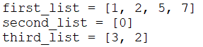
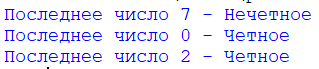

Сравнения в python
-
Создайте программу, которая выдает сумму двух чисел если их сумма меньше 1000, иначе результатом будет произведение.
-
Создайте программу, которая выдает четность или нечетность последнего числа в списке.


-
Создайте программу, которая выдает количество необходимых пицц в зависимости от количества человек и количества денег.
Количество человек и денег задается с помощью input()
Полезные ссылки:
Где потренироваться: